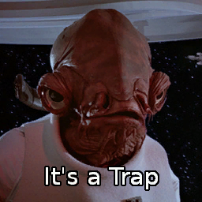

Company of Heroes
Tactical Mappings v1.500
- Install Custom Maps + Mod Switching
Temporary Maps List
Opposing Factions Mod v1.3
- Merger of Tactical_AI_Mod and Mixed_Factions Mod
Flying Tanks
Testing flying tanks on map: Bridge Reality
Tested various units from US and Wehrmacht factions.
Attempting to Fly British Gliders
Testing British Gliders on map: Bridge Reality
Also tested units from Panzer Elite faction and British Faction.
Destroying Bridge with Parked British HQ
Destroying a bridge with demolition charges while a British HQ is parked on it.
Halftrack Drifting
Halftrack performs 180-degree spin while driving backwards.
Self-Destructing British Truck
The source of all those random "We've destroyed an allied unit" notifications.
Panthers vs Hetzers
A battle between Panthers and Hetzers.
Also joining the party: Pak38s, PIATs, a Tiger Tank, and a sniper.
Unfortunately, the King Tiger could not make it to the party due to its speed.
Four Hetzers Bombed with Artillery
Bostonian bombs four Hetzers.
Tank Falls off Bridge
M4 Sherman Tank jumps into the river to assault a panther tank.
Panther Crushes British Lieutenant
Daedalon's Panther tank rolls over a British Lieutenant
Repairing Enemy Tanks
Due to mixed factions mod, the Repair Tank can recover enemy German vehicles.
Sniper Thinks He is a Seal
Sniper decides he wants to be a seal instead of a human.
Destroying HQ with Teller Mines
How many teller mines does it take to destroy an HQ?
Medic Stuck on Road
British medic chooses the worst spot to take a break.
Hellcat + Mortar Pit vs Schwimm
A shining example illustrating the importance of veterancy.
Bost Bridge-Bombs the British
British push a bridge too far, again.

Admiral Ackbar's Tips and Tricks for Company of Heroes